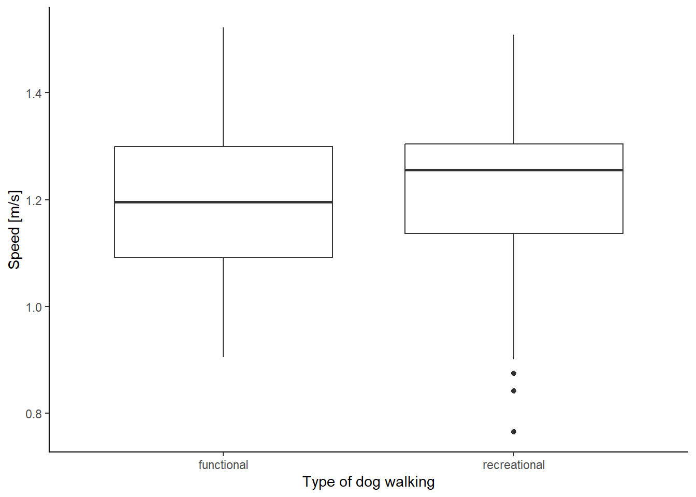
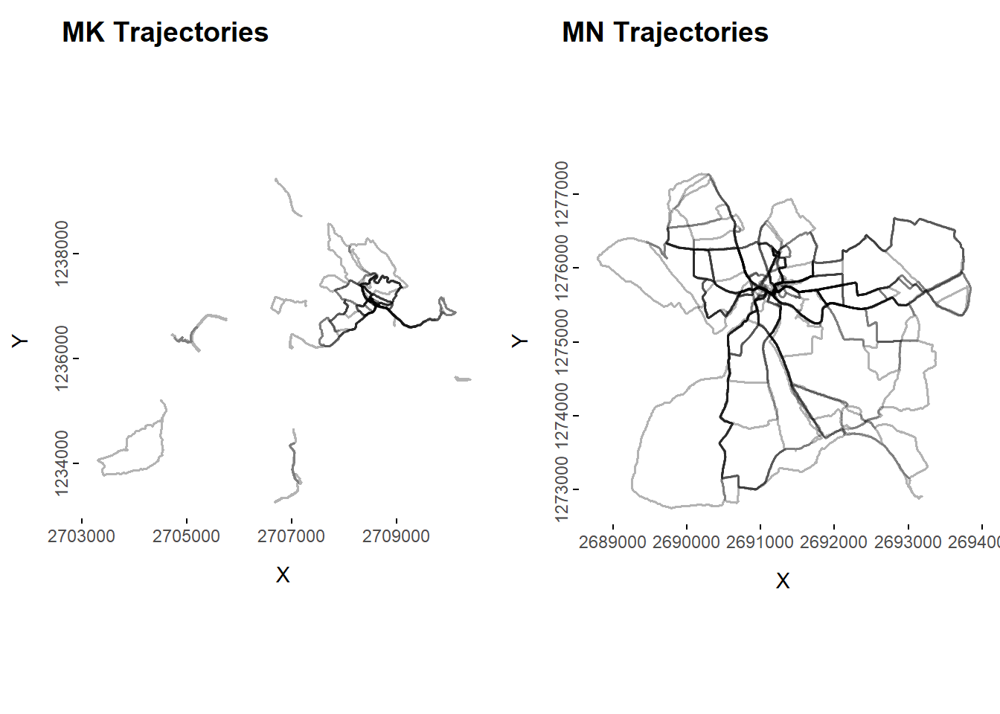
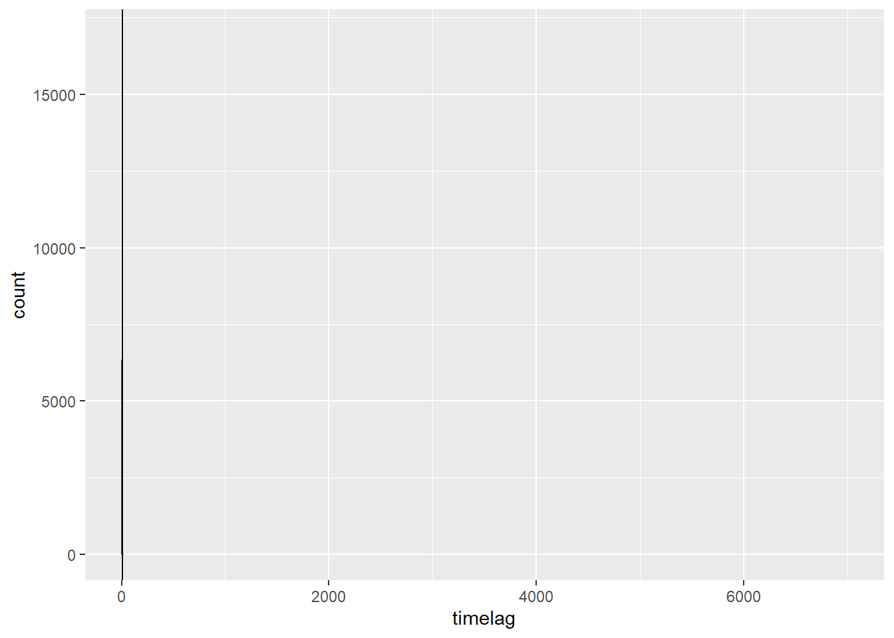

Code
library(sf)
library(tidyverse)
library(tmap)
library(cowplot)
library(lubridate)
library(dplyr)
library(plotly)
library(tmap)
library(SimilarityMeasures)
library(data.table)Final Project Patterns and Trends in Environmental Data - Computational Movement Analysis
library(sf)
library(tidyverse)
library(tmap)
library(cowplot)
library(lubridate)
library(dplyr)
library(plotly)
library(tmap)
library(SimilarityMeasures)
library(data.table)#Import data, handle spatial data and project the coordinates into the new Swiss CRS CH1903+ LV95. Data from two individuals: MK and MM
# Import data
# filter walk transport mode, select only necessary columns, and transform data frame into sf object and transform it into EPSG 2056 coordinate system
#Import Posmo data MK
posmo_MK <- read_delim("data/posmo_MK_edited3.csv", delim = ";") |>
filter(transport_mode == "Walk") |>
select(user_id, datetime, weekday, lon_x, lat_y, trajectoryID, Type, Shape) |>
st_as_sf(coords = c("lon_x","lat_y"), crs = 4326)|>
st_transform(2056)
# Import Posmo data MN
posmo_MN <- read_delim("data/posmo_MN_edited3.csv", delim = ";") |>
filter(transport_mode == "Walk") |>
select(user_id, datetime, weekday, lon_x, lat_y, trajectoryID, Type, Shape) |>
st_as_sf(coords = c("lon_x","lat_y"), crs = 4326)|>
st_transform(2056)
str(posmo_MK)
str(posmo_MN)
# import Weather Data with only the relevant columns
precip_data <- read_delim("data/weather_data.csv") |>
select(-tre200s0, -sre000z0)
precip_hinwil <- read_delim("data/weather_hinwil.csv")
# filter SHA weather station
precip_SHA <- precip_data |> filter(stn == "SHA") |> rename(datetime = time)
precip_SHA$datetime <- as.POSIXct(precip_SHA$datetime, tz = "UTC") # convert character into POSIXct
# HIW weather station
precip_HIW <- precip_hinwil |> rename(datetime = time) |> rename(rco150z0 = rre150z0)
precip_HIW$datetime <- as.POSIXct(precip_HIW$datetime, tz = "UTC") # convert character into POSIXct
# Pre-processing
# store the coordinates into two separate columns
posmo_coordinates <- st_coordinates(posmo_MK)
posmo_MK <- cbind(posmo_MK, posmo_coordinates)
str(posmo_MK)
# the same with MN Data
posmoMN_coordinates <- st_coordinates(posmo_MN)
posmo_MN <- cbind(posmo_MN, posmoMN_coordinates)#calculate longest distance from each trajectory to home for the two data sets
#Create an sf object with the house coordinates
house_MK <- read_delim("data/MK_house.csv") |>
st_as_sf(coords = c("lon_x","lat_y"), crs = 4326)|>
st_transform(2056)
houseMK_coordinates <- st_coordinates(house_MK)
house_MK <- cbind(house_MK, houseMK_coordinates)
#The same with MN
house_MN <- read_delim("data/MN_house.csv") |>
st_as_sf(coords = c("lon_x","lat_y"), crs = 4326)|>
st_transform(2056)
houseMN_coordinates <- st_coordinates(house_MN)
house_MN <- cbind(house_MN, houseMN_coordinates)
#Calculate the max distance from the house for each trajectory
posmo_MK$distance_home <- as.numeric(st_distance(posmo_MK, house_MK)[,1])
posmo_MK <- posmo_MK |>
group_by(trajectoryID) |>
mutate(max_distance = max(distance_home))
#the same for MN
posmo_MN$distance_home <- as.numeric(st_distance(posmo_MN, house_MN)[,1])
posmo_MN <- posmo_MN |>
group_by(trajectoryID) |>
mutate(max_distance = max(distance_home))
## Join posmo data with weather data then join the two dataframes
# Create new column with time values rounded to closest 10 minutes, to be able to join with weather data
posmo_MN <- posmo_MN |> mutate(
Datetime_round = lubridate::round_date(datetime,"10 minutes")
)
posmo_MK <- posmo_MK |> mutate(
Datetime_round = lubridate::round_date(datetime,"10 minutes")
)
# Join posmo data with weather data
posmo_weather_MN <- left_join(posmo_MN, precip_SHA, by = c("Datetime_round" = "datetime"))
posmo_weather_MK <- left_join(posmo_MK, precip_HIW, by = c("Datetime_round" = "datetime"))
# Delete double timestamps
posmo_weather_MN <- posmo_weather_MN |>
distinct(datetime, .keep_all = TRUE)
# Add new column for rain/no rain
posmo_weather_MN$precip[posmo_weather_MN$rco150z0 == 0] <- "no"
posmo_weather_MN$precip[posmo_weather_MN$rco150z0 > 0] <- "yes"
posmo_weather_MK$precip[posmo_weather_MK$rco150z0 == 0] <- "no"
posmo_weather_MK$precip[posmo_weather_MK$rco150z0 > 0] <- "yes"
#Join the two data frames vertically
posmo <- rbind(posmo_weather_MN, posmo_weather_MK)
# Get trajectories with precipitation >50% of the time
precip50 <- posmo |>
group_by(trajectoryID) |>
summarise(percent = length(which(precip == "yes")) / n()) |>
filter(percent >= 0.5) # trajectories 15, 16, 23, 45, T8, T9, T16, T20
# Create new column "precip_50 for trajectories with >= 50% of the time with rain
posmo <- posmo |>
group_by(trajectoryID, precip) |>
mutate(
precip_50 = case_when(
trajectoryID=="15" ~ "yes",
trajectoryID=="16" ~ "yes",
trajectoryID=="23" ~ "yes",
trajectoryID=="45" ~ "yes",
trajectoryID=="T8" ~ "yes",
trajectoryID=="T9" ~ "yes",
trajectoryID=="T16" ~ "yes",
trajectoryID=="T20" ~ "yes",
)
)
# assign all other values "no"
posmo$precip_50 <- posmo$precip_50 |> replace_na("no")
# Add a new column wday for Weekday/Weekend
posmo$wday <- ifelse(posmo$weekday %in% c("Sat", "Sun"), "weekend", "weekday")
#Add a new column start with the time at which the trajectory started and separate the time with format H and M
posmo <- posmo |>
group_by(trajectoryID) |>
mutate(start = min(datetime))
posmo$start <- format(as.POSIXct(posmo$start, format = "%H:%M"))
# Add a new column time_of_day for Morning/Afternoon/Evening
breaks <- lubridate::hour(hm("3:00", "10:00", "16:00", "21:59"))
labels <- c("Morning", "Afternoon", "Evening")
posmo$time_of_day <- cut(x=hour(posmo$start), breaks = breaks, labels = labels, include.lowest=TRUE)
# Summarise the trajectory shapes
shape_summary <- posmo |>
group_by(trajectoryID, Shape) |>
summarise() |>
ungroup() |>
group_by(Shape) |>
summarise(count = n()) |>
st_drop_geometry() |>
mutate(percent = round(count / sum(count) * 100, 2))#Remove static points from trajectories. posmo-filter contains the trajectories without static points
str(posmo)
#To calculate distance among Time-stamp 1 and 2 back and forward.
posmo <- posmo |>
group_by(trajectoryID) |>
mutate(
n_plus1 = sqrt ((lead(X, 1) - X)^2 + (lead(Y, 1)-Y)^2),
n_plus2 = sqrt ((lead(X, 2) - X)^2 + (lead(Y, 2)-Y)^2),
nMinus1 = sqrt((lag(X, 1) - X)^2 + (lag(Y, 1) - Y)^2),
nMinus2 = sqrt((lag(X, 2) - X)^2 + (lag(Y, 2) - Y)^2)
)
posmo <- posmo |>
rowwise() |>
mutate(
stepMean = mean(c(nMinus2, nMinus1, n_plus1, n_plus2))
) |>
ungroup()
which(posmo$stepMean> 50 )
#Remove static points by applying threshold, the threshold is the average step Mean.
posmo <- posmo |>
mutate(static = stepMean < mean(stepMean, na.rm = TRUE))
posmo_filter <- posmo |>
filter(!static)# Visualization of trajectories for both users
# Visualization of all trajectories of MN
plotMN <- posmo_MN |>
ggplot(aes(X, Y, group = trajectoryID)) +
geom_path(col = "black", alpha = 0.3, size = 0.6) +
coord_equal(ratio = 1) +
theme(legend.position = "none") +
theme_minimal()+
theme(panel.grid = element_blank(),
axis.ticks = element_line(),
axis.text.y = element_text(angle = 90, hjust = 0.5),
axis.title.x = element_text(margin = margin(t = 5,r = 0,b=0,l=0)),
axis.title.y = element_text(margin = margin(t = 0,r = 5,b=0,l=0))) +
labs(x = "X", y = "Y")
# MK home trajectories (excluding two trajectories in Kanton of Graubünden)
posmoMK_home <- filter(posmo_MK, !trajectoryID %in% c("T2", "T3"))
# Visualization of all home trajectories of MK
plotMK <- posmoMK_home |>
ggplot(aes(X, Y, group = trajectoryID)) +
geom_path(col = "black", alpha = 0.3, size = 0.6) +
coord_equal(ratio = 1) +
theme(legend.position = "none") +
theme_minimal()+
theme(panel.grid = element_blank(),
axis.ticks = element_line(),
axis.text.y = element_text(angle = 90, hjust = 0.5),
axis.title.x = element_text(margin = margin(t = 5,r = 0,b=0,l=0)),
axis.title.y = element_text(margin = margin(t = 0,r = 5,b=0,l=0))) +
labs(x = "X", y = "Y")
# Breaks need to get adjusted to be equal
plot_grid(plotMN, plotMK,
labels = c("MNl Trajectories", "MK Trajectories"),
hjust = c(-0.3, -0.3),
vjust = 5,
ncol = 2, nrow = 1)
##Trajectories visualization with and without static points
## One of MK
K1 <- posmo %>%
filter(trajectoryID == "T1")
K1_filter <- posmo_filter %>%
filter(trajectoryID == "T1")
K1a <- ggplot(K1, aes(X, Y))+
geom_path()+
geom_point(color = "blue")+
coord_fixed()
K1b <- ggplot(K1_filter, aes(X, Y))+
geom_path()+
geom_point()+
coord_fixed()
plot_grid(K1a, K1b,
labels = c("Raw", "Static points removed"),
hjust = c(-2,-0.4),
vjust = 2.5,
ncol = 2, nrow = 1)
#Timelag.
#How often was the position recorded. Calculated for the trajectories with and without (posmo_filter) static points
posmo <- posmo |>
group_by(trajectoryID)|>
mutate(timelag = as.numeric(difftime(lead(datetime), datetime, units = "secs")))
posmo_filter <- posmo_filter |>
group_by(trajectoryID)|>
mutate(timelag = as.numeric(difftime(lead(datetime), datetime, units = "secs")))
which(posmo$timelag> 300)#The threshold was set at 300 (15*20), sometimes we had pauses of up to 20 minutes during the walks that recorded the same location several times
which(posmo$timelag> 500)
#Steplenght, distance covered and speed calculation
#calculation with the whole trajectories
posmo <- posmo |>
group_by(trajectoryID) |>
mutate(steplenght = sqrt ((X-lead(X))^2 + (Y-lead(Y))^2))|>
filter(steplenght<50) |>
mutate(speed = mean(steplenght/timelag, na.rm = TRUE))|>
mutate(duration = (max(datetime)- min(datetime))/60)|>
mutate(distance = sum(steplenght, na.rm = TRUE))
#calculation with the trajectories without static points
posmo_filter <- posmo_filter |>
group_by(trajectoryID) |>
mutate(steplenght = sqrt ((X-lead(X))^2 + (Y-lead(Y))^2))|>
mutate(speed = mean(steplenght/timelag, na.rm = TRUE))|>
mutate(duration = (max(datetime)- min(datetime))/60)|>
mutate(distance = sum(steplenght, na.rm = TRUE))
which(posmo$steplenght > 30) #30 meters in 15 seconds its an average
# Distance calculations
# calculate average distance for recreational/functional walks
dist_summary <- posmo |>
group_by(Type, distance) |>
summarise() |>
st_drop_geometry()
mean(dist_summary$distance[1:33]) # average distance of functional walks 1272.11 m
mean(dist_summary$distance[34:103]) # average distance of recreational walks 4389.43 m
# calculate average distance for recreational/functional walks with and without precipitation
precip_dist_summary <- posmo |>
group_by(Type, precip_50, distance) |>
summarise() |>
st_drop_geometry()
mean(precip_dist_summary$distance[1:31]) # average distance of functional walks without rain 1282.68 m
mean(precip_dist_summary$distance[32:33]) # average distance of functional walks with rain 1108.17 m
mean(precip_dist_summary$distance[34:97]) # average distance of recreational walks without rain 44395.09 m
mean(precip_dist_summary$distance[98:103]) # average distance of recreational walks with rain 4395.09 m
# calculate average distance for recreational/functional walks for 3 time of day categories (morning/afternoon/evening)
dist_type_tofday_summary <- posmo |>
group_by(Type, time_of_day, distance) |>
summarise() |>
st_drop_geometry()
mean(dist_type_tofday_summary$distance[1:9]) # average distance of functional morning walks 1330.23 m
mean(dist_type_tofday_summary$distance[10:21]) # average distance of functional afternoon walks 1304.13 m
mean(dist_type_tofday_summary$distance[22:33]) # average distance of functional evening walks 1196.49 m
mean(dist_type_tofday_summary$distance[34:67]) # average distance of recreational morning walks 5154.33 m
mean(dist_type_tofday_summary$distance[68:90]) # average distance of recreational afternoon walks 3973.71 m
mean(dist_type_tofday_summary$distance[91:103]) # average distance of recreational evening walks 3124.44 m
# calculate average distance for morning/afternoon/evening walks
dist_timeofday_summary <- posmo |>
group_by(time_of_day, distance) |>
summarise() |>
st_drop_geometry()
mean(dist_timeofday_summary$distance[1:43]) # average distance of morning walks 4353.93 m
mean(dist_timeofday_summary$distance[44:78]) # average distance of afternoon walks 3058.42 m
mean(dist_timeofday_summary$distance[79:103]) # average distance of evening walks 2199.02 m
# calculate average distance for weekday/weekend walks
dist_wday_summary <- posmo |>
group_by(wday, distance) |>
summarise() |>
st_drop_geometry()
mean(dist_wday_summary$distance[1:71]) # average distance of weekday walks 3491.19 m
mean(dist_wday_summary$distance[72:103]) # average distance of weekend walks 3167.67 m
# Speed calculations
# calculate average speed for recreational/functional walks
speed_summary <- posmo |>
group_by(Type, speed) |>
summarise() |>
st_drop_geometry()
mean(speed_summary$speed[1:33]) # average speed of functional walks 1.18 m/s
mean(speed_summary$speed[34:103]) # average speed of recreational walks 1.22 m/s
# calculate average speed for recreational/functional walks with and without precipitation
speed_precip_summary <- posmo |>
group_by(Type, precip_50, speed) |>
summarise() |>
st_drop_geometry()
mean(speed_precip_summary$speed[1:31]) # average speed of functional walks without rain 1.17 m/s
mean(speed_precip_summary$speed[32:33]) # average speed of functional walks with rain 1.31 m/s
mean(speed_precip_summary$speed[34:97]) # average speed of recreational walks without rain 1.21 m/s
mean(speed_precip_summary$speed[98:103]) # average speed of recreational walks with rain 1.30 m/s
# calculate average speed for weekday/weekend walks
speed_wday_summary <- posmo |>
group_by(wday, speed) |>
summarise() |>
st_drop_geometry()
mean(speed_wday_summary$speed[1:71]) # average speed of weekday walks 1.22 m/s
mean(speed_wday_summary$speed[72:103]) # average speed of weekend walks 1.18 m/s#Visualization of parameters
ggplot(posmo, mapping = aes(Type, distance))+
geom_boxplot() +
labs(x = "Type of dog walking", y = "Distance [m]")+
theme_light()
ggplot(posmo, mapping = aes(time_of_day, distance))+
geom_boxplot() +
labs(x = "Time of day", y = "Distance [m]")+
theme_light()
ggplot(posmo, mapping = aes(precip_50, distance))+
geom_boxplot() +
labs(x = "Precipitation", y = "Distance [m]")+
theme_light() 
ggplot(posmo, mapping = aes(precip_50, speed))+
geom_boxplot() +
labs(x = "Precipitation", y = "Speed [m/s]")+
theme_light()
ggplot(posmo, mapping = aes(Type, max_distance))+
geom_boxplot() +
labs(x = "Type of dog walkint", y = "Max distance home [m]")+
theme_light()+
scale_y_continuous(limits = c(0, 1000))
# Pie chart of trajectory shapes
plot_ly(shape_summary, labels = ~Shape, values = ~percent, type = 'pie') %>%
layout(title = "Trajectory Shapes",
xaxis = list(showgrid = FALSE, zeroline = FALSE, showticklabels = FALSE),
yaxis = list(showgrid = FALSE))# Frechet Distance
#Visualization of parameters
#randomly select trajectories to compare for MN
x <- sample(1:56, 1)
x
# Functional: 4, 36, 55 Recreational: 6, 39, 49
#randomly select trajectories to compare for MK
x1 <- sample(1:48, 1)
x1
#Functional: T11, T35, T43 Recreational: T40, T20, T27
#Create the matrices for the trajectories to compare
#Four recreational walks for MN
Traj6MN <- posmo |>
ungroup() |>
st_drop_geometry() |>
filter(trajectoryID == 6)|>
mutate(Datetime_int = as.integer(datetime))|>
select(X, Y, Datetime_int)
Traj6MN <- as.matrix(Traj6MN)
Traj39MN <- posmo |>
ungroup() |>
st_drop_geometry() |>
filter(trajectoryID == 39)|>
mutate(Datetime_int = as.integer(datetime))|>
select(X, Y, Datetime_int)
Traj39MN <- as.matrix(Traj39MN)
Traj49MN <- posmo |>
ungroup() |>
st_drop_geometry() |>
filter(trajectoryID == 49)|>
mutate(Datetime_int = as.integer(datetime))|>
select(X, Y, Datetime_int)
Traj49MN <- as.matrix(Traj49MN)
#Four functional walks for MN
Traj4MN <- posmo |>
ungroup() |>
st_drop_geometry() |>
filter(trajectoryID == 4)|>
mutate(Datetime_int = as.integer(datetime))|>
select(X, Y, Datetime_int)
Traj4MN <- as.matrix(Traj4MN)
Traj36MN <- posmo |>
ungroup() |>
st_drop_geometry() |>
filter(trajectoryID == 36)|>
mutate(Datetime_int = as.integer(datetime))|>
select(X, Y, Datetime_int)
Traj36MN <- as.matrix(Traj36MN)
Traj55MN <- posmo |>
ungroup() |>
st_drop_geometry() |>
filter(trajectoryID == 55)|>
mutate(Datetime_int = as.integer(datetime))|>
select(X, Y, Datetime_int)
Traj55MN <- as.matrix(Traj55MN)
#Four recreational walks for MK
Traj20MK <- posmo |>
ungroup() |>
st_drop_geometry() |>
filter(trajectoryID == "T20")|>
mutate(Datetime_int = as.integer(datetime))|>
select(X, Y, Datetime_int)
Traj20MK <- as.matrix(Traj20MK)
Traj40MK <- posmo |>
ungroup() |>
st_drop_geometry() |>
filter(trajectoryID == "T40")|>
mutate(Datetime_int = as.integer(datetime))|>
select(X, Y, Datetime_int)
Traj40MK <- as.matrix(Traj40MK)
Traj27MK <- posmo |>
ungroup() |>
st_drop_geometry() |>
filter(trajectoryID == "T27")|>
mutate(Datetime_int = as.integer(datetime))|>
select(X, Y, Datetime_int)
Traj27MK <- as.matrix(Traj27MK)
#Four functional walks for MK
Traj11MK <- posmo |>
ungroup() |>
st_drop_geometry() |>
filter(trajectoryID == "T11")|>
mutate(Datetime_int = as.integer(datetime))|>
select(X, Y, Datetime_int)
Traj11MK <- as.matrix(Traj11MK)
Traj35MK <- posmo |>
ungroup() |>
st_drop_geometry() |>
filter(trajectoryID == "T35")|>
mutate(Datetime_int = as.integer(datetime))|>
select(X, Y, Datetime_int)
Traj35MK <- as.matrix(Traj35MK)
Traj43MK <- posmo |>
ungroup() |>
st_drop_geometry() |>
filter(trajectoryID == "T43")|>
mutate(Datetime_int = as.integer(datetime))|>
select(X, Y, Datetime_int)
Traj43MK <- as.matrix(Traj43MK)#Similarity measures: Calculate Frechet distance for 4 randomly selected functional and 4 recreational walks within the same walker.
run_full <- FALSE
if(run_full){
# MN Functional: 4, 36, 55
A<- Frechet(Traj4MN, Traj36MN, testLeash=-1)# 1291697
B <- Frechet(Traj4MN, Traj55MN)# 1898412
D <- Frechet(Traj36MN, Traj55MN)# 606863
SM1 <- data.frame (
Frechet = c(A, B, D),
Trajpair = c("T4-T36", "T4-55", "T36-T55"),
Walker = c ("MN", "MN", "MN"),
Type = c("Functional", "Functional", "Functional")
)
# Recreational: 6, 39, 49
G <- Frechet(Traj6MN, Traj39MN) #1355605
H <- Frechet(Traj6MN, Traj49MN) #1641793
J <- Frechet(Traj39MN, Traj49MN) #286763
SM2 <- data.frame (
Frechet = c(G, H, J),
Trajpair = c("T6-T39", "T6-49", "T39-T49"),
Walker = c ("MN", "MN", "MN"),
Type = c("Recreational", "Recreational", "Recreational")
)
# MK Functional: T11, T35, T43
M <- Frechet(Traj11MK, Traj35MK) #106106.4
N <- Frechet(Traj11MK, Traj43MK) #1997576
P <- Frechet(Traj35MK, Traj43MK) #530645
SM3 <- data.frame (
Frechet = c(M, N, P),
Trajpair = c("T11-T35", "T11-43", "T35-T43"),
Walker = c ("MK", "MK", "MK"),
Type = c("Functional", "Functional", "Functional")
)
# Recreational: T40, T20, T27
S <- Frechet(Traj40MK, Traj20MK) #1106042
Z <- Frechet(Traj40MK, Traj27MK) #786486
V <- Frechet(Traj20MK, Traj27MK) #319621.3
SM4 <- data.frame(
Frechet = c(S, Z, V),
Trajpair = c("T40-T20", "T40-27", "T20-T27"),
Walker = c ("MK", "MK", "MK"),
Type = c("Recreational", "Recreational", "Recreational")
)
Frechet <- rbind(SM1, SM2, SM3, SM4)
write_csv(Frechet, "data-temp/Frechet.csv")
} else{
Frechet <- read_csv("data-temp/Frechet.csv")
}
ggplot(Frechet, mapping = aes(Type, Frechet))+
geom_boxplot() +
labs(x = "Type of dog walking", y = "Frechet Distance")+
theme_light() 
ggplot(Frechet, aes(Trajpair, Frechet))+
geom_col(aes(fill = Walker))+
facet_wrap(~ Type, nrow = 2, scales = "free")+
theme_light()+
labs(x = "Trajectory pairs", y = "Frechet Distance")+
theme(axis.text.x = element_text(angle = 90))